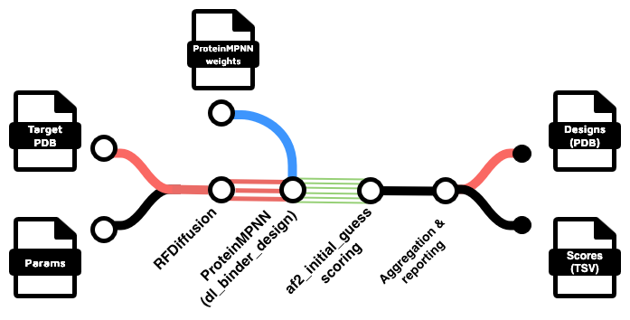

RFdiffusion Workflows

RFdiffusion-based workflows for de novo protein binder design.
Overview
The RFdiffusion workflows include:
- main.nf: Complete binder design pipeline (RFdiffusion → ProteinMPNN → AlphaFold2 initial guess)
- partial.nf: Partial diffusion refinement of existing designs or complexes
General Information
Command-line Options
For any workflow, you can see available options with --help:
nextflow run main.nf --help
nextflow run partial.nf --help
Parameters File
Parameter command-line options (those prefixed with --) can also be defined in a params.json file:
nextflow run main.nf -params-file params.json
eg:
{
"hotspot_res": "A473,A995,A411,A421",
"rfd_n_designs": 10
}
Parameter names typically mirror the equivalent command-line options in the underlying tools, often prefixed with rfd_ or pmpnn_ etc.
Binder Design with RFdiffusion (main.nf)
Single Node or Local Workstation
Simple example for local execution:
OUTDIR=results
mkdir -p $OUTDIR/logs
nextflow run main.nf \
--input_pdb target.pdb \
--outdir $OUTDIR \
--contigs "[A371-508/A753-883/A946-1118/A1135-1153/0 70-100]" \
--hotspot_res "A473,A995,A411,A421" \
--rfd_n_designs=10 \
--rfd_batch_size 1 \
-with-report $OUTDIR/logs/report_$(date +%Y%m%d_%H%M%S).html \
-with-trace $OUTDIR/logs/trace_$(date +%Y%m%d_%H%M%S).txt \
-resume \
-profile local
Parallel tasks on an HPC Cluster
Here's a more complex example for the M3 HPC cluster with custom settings:
#!/bin/bash
# Path to your git clone of this repo
WF_PATH="/path/to/nf-binder-design"
mkdir -p results/logs
DATESTAMP=$(date +%Y%m%d_%H%M%S)
# Ensure tmp directory has enough space
export TMPDIR=$(realpath ./tmp)
export NXF_TEMP=$TMPDIR
mkdir -p $TMPDIR
# Set apptainer cache directory (change to your scratch path)
export NXF_APPTAINER_CACHEDIR=/path/to/scratch2/apptainer_cache
export NXF_APPTAINER_TMPDIR=$TMPDIR
# Load Nextflow module (if available on your HPC)
module load nextflow/24.04.3 || true
nextflow \
-c ${WF_PATH}/conf/platforms/m3.config run \
${WF_PATH}/main.nf \
--slurm_account=ab12 \
--input_pdb 'input/target_cropped.pdb' \
--design_name my-binder \
--outdir results \
--contigs "[B346-521/B601-696/B786-856/0 70-130]" \
--hotspot_res "B472,B476,B484,B488" \
--rfd_n_designs=1000 \
--rfd_batch_size=5 \
--rfd_filters="rg<20" \
--pmpnn_seqs_per_struct=2 \
--pmpnn_relax_cycles=1 \
--pmpnn_weigths="/models/HyperMPNN/retrained_models/v48_020_epoch300_hyper.pt" \
--rfd_model_path="/models/rfdiffusion/Complex_beta_ckpt.pt" \
--rfd_extra_args='potentials.guiding_potentials=["type:binder_ROG,weight:7,min_dist:10"] potentials.guide_decay="quadratic"' \
-resume \
-with-report results/logs/report_${DATESTAMP}.html \
-with-trace results/logs/trace_${DATESTAMP}.txt
Key Parameters
--input_pdb: Target protein structure--contigs: Contig definition for RFdiffusion--hotspot_res: Hotspot residues (comma-separated)--rfd_n_designs: Number of designs to generate--rfd_filters: Filter expression (e.g.,"rg<20")--rfd_model_path: Custom RFdiffusion model--pmpnn_weights: Custom ProteinMPNN weights
The -c flag is used here to specify a configuration file specific to the M3 HPC cluster.
Other site-specific configuration files are provided in conf/platforms/:
m3.config- Monash M3 clusterm3-bdi.config- Monash M3 cluster with access to thebdiandm3hpartitionsmlerp.config- MLeRP cluster
These can be adapted to other HPC clusters - pull requests are welcome !
Partial Diffusion on Binder Designs (partial.nf)
Refine existing binder designs with partial diffusion:
OUTDIR=results
mkdir -p $OUTDIR/logs
# Generate 10 partial designs for each binder, in batches of 5
# Note the 'single quotes' around the '*.pdb' glob pattern!
nextflow run partial.nf \
--input_pdb 'my_designs/*.pdb' \
--rfd_n_partial_per_binder=10 \
--rfd_batch_size=5 \
--hotspot_res "A473,A995,A411,A421" \
--rfd_partial_T=2,5,10,20 \
-with-report $OUTDIR/logs/report_$(date +%Y%m%d_%H%M%S).html \
-with-trace $OUTDIR/logs/trace_$(date +%Y%m%d_%H%M%S).txt \
-profile local
⚠️ Note - if you are applying partial diffusion to designs output from the
main.nfworkflow, the binder is will be chain A, with other chains named B, C, etc., regardless of the original target PDB chain IDs. Residue numbering is sequential 1 to N. Your hotspots should be adjusted to account for this !
Design Filter Plugin System
The main.nf and partial.nf pipelines support custom metric calculation and filtering via plugins.
Using Filters
Controlled by the --rfd_filters parameter:
--rfd_filters="rg<20"
Available Filters
Filters are Python scripts in bin/filters.d/. Currently available:
- rg (radius of gyration) - in
bin/filters.d/rg.py

Creating Custom Filters
Create a new .py file in bin/filters.d/ implementing two functions:
1. register_metrics() -> list[str]
Returns list of metric names:
def register_metrics() -> list[str]:
return ["rg", "my_custom_score"]
2. calculate_metrics(pdb_files: list[str], binder_chains: list[str]) -> pd.DataFrame
Calculates metrics and returns a DataFrame:
def calculate_metrics(pdb_files: list[str], binder_chains: list[str]) -> pd.DataFrame:
# Perform calculations
# Return DataFrame with:
# - Index: design ID (PDB filename without .pdb)
# - Columns: metric names from register_metrics()
return results_df
The bin/filter_designs.py script automatically discovers and calls plugins based on filter expressions.
Examples
The examples/ directory contains complete working examples for RFdiffusion workflows:
examples/pdl1-rfd: binder design with RFdiffusion + ProteinMPNN + AlphaFold2 initial guessexamples/pdl1-rfd-partial: partial diffusion of existing designsexamples/egfr-rfd-hypermpnn: binder design with inverse folding using the HyperMPNN weights